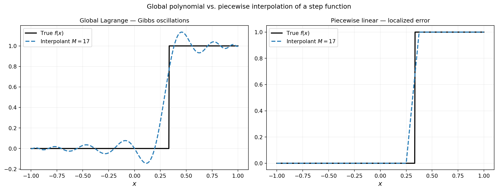
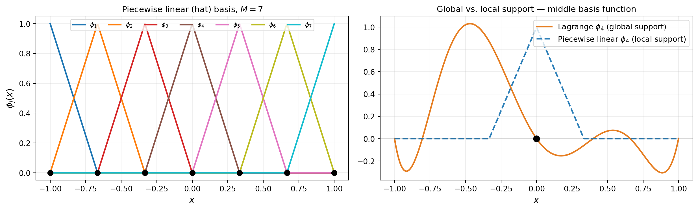
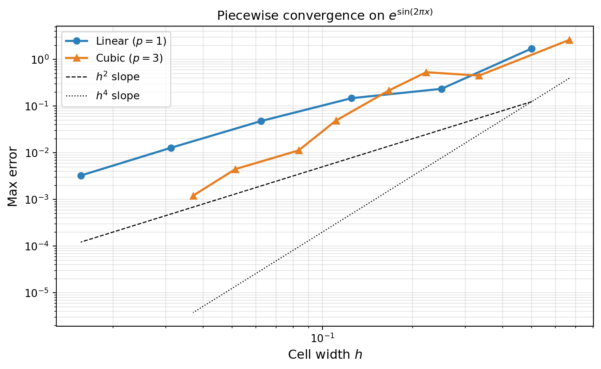
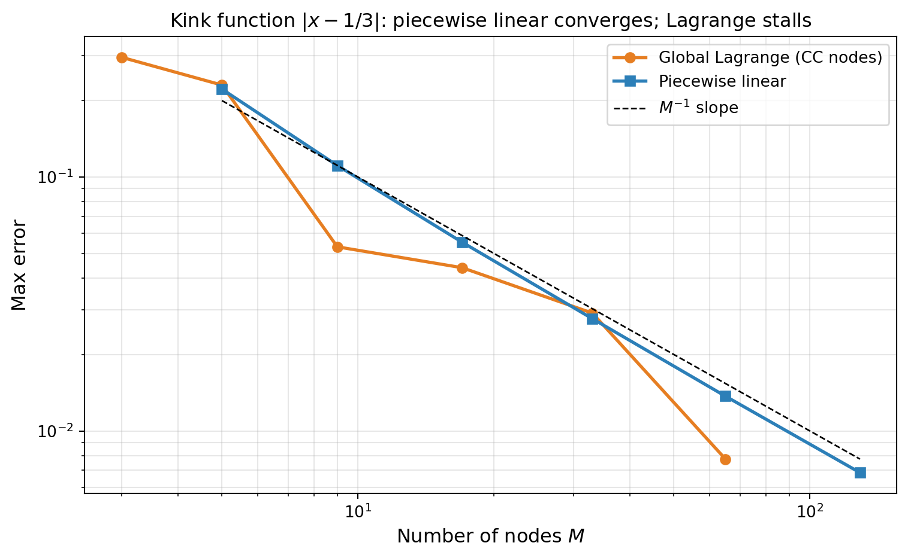

import numpy as np
np.random.seed(42)
import matplotlib.pyplot as plt
from pyapprox.util.backends.numpy import NumpyBkd
from pyapprox.surrogates.affine.univariate import (
LagrangeBasis1D,
PiecewiseLinear,
PiecewiseQuadratic,
PiecewiseCubic,
)
from pyapprox.surrogates.affine.univariate.globalpoly import (
ClenshawCurtisQuadratureRule,
)
bkd = NumpyBkd()Piecewise Polynomial Interpolation: Local Basis Functions
PyApprox Tutorial Library
Construct linear, quadratic, and cubic piecewise bases, analyze convergence for smooth and discontinuous functions, and preview PiecewiseFactory for sparse grids.
TipDownload Notebook
Learning Objectives
After completing this tutorial, you will be able to:
- Explain when piecewise polynomials outperform global Lagrange polynomials
- Construct piecewise linear, quadratic, and cubic basis functions with
PiecewiseLinear,PiecewiseQuadratic, andPiecewiseCubic - Verify the \(O(h^{p+1})\) convergence rate for smooth functions
- Demonstrate that piecewise polynomials handle discontinuous functions without Gibbs-like oscillations
- Preview
PiecewiseFactoryfor integrating piecewise bases into the sparse grid framework
Prerequisites
Complete Piecewise Polynomial Quadrature before this tutorial. Familiarity with Lagrange interpolation from Lagrange Interpolation helps but is not required.
Setup
When Global Polynomials Fail
The Lagrange interpolation error bound
\[ \max_{x \in [a,b]} \lvert f(x) - f_M(x) \rvert \leq \frac{1}{M!} \max_x \prod_{j=1}^{M} \lvert x - x^{(j)} \rvert \cdot \max_{c} \lvert f^{(M)}(c) \rvert \]
requires \(f\) to have \(M\) bounded derivatives. For functions with a discontinuity or a kink, this bound is violated and global polynomials exhibit the Gibbs phenomenon: persistent oscillations near the singularity that do not decay as \(M\) increases.
from _figures._interpolation import plot_gibbs
def fun_step(x):
y = np.zeros_like(x)
y[x > 1.0/3.0] = 1.0
return y
cc_rule = ClenshawCurtisQuadratureRule(bkd, store=True)
a, b = -1.0, 1.0
M_cc = 17 # CC requires 2^l + 1: 3, 5, 9, 17, ...
M_pw = 17
x_plot = np.linspace(a, b, 600)
x_plot_bkd = bkd.array(x_plot.reshape(1, -1))
true_vals = fun_step(x_plot)
# Global Lagrange on CC nodes
basis_cc = LagrangeBasis1D(bkd, cc_rule)
basis_cc.set_nterms(M_cc)
nodes_cc, _ = basis_cc.quadrature_rule()
nodes_cc_np = bkd.to_numpy(nodes_cc).ravel()
phi_cc = bkd.to_numpy(basis_cc(x_plot_bkd)) # (600, M_cc)
interp_lagrange = phi_cc @ fun_step(nodes_cc_np)
# Piecewise linear on uniform nodes
nodes_pw = bkd.array(np.linspace(a, b, M_pw))
pw_lin = PiecewiseLinear(nodes_pw, bkd)
interp_pw = bkd.to_numpy(pw_lin(bkd.array(x_plot))) # (600, M_pw)
interp_pw_vals = interp_pw @ bkd.to_numpy(fun_step(nodes_pw))
fig, axs = plt.subplots(1, 2, figsize=(13, 5))
plot_gibbs(x_plot, true_vals, interp_lagrange, interp_pw_vals, M_cc, M_pw, axs)
plt.suptitle("Global polynomial vs. piecewise interpolation of a step function", fontsize=12)
plt.tight_layout()
plt.show()
Local Basis Functions
Piecewise polynomial interpolation divides \([a, b]\) into cells and fits a low-degree polynomial locally within each cell. The basis functions have compact support: \(\phi_j(x) = 0\) outside the one or two cells adjacent to node \(j\). This locality prevents errors at one node from propagating across the domain.
The PiecewiseLinear, PiecewiseQuadratic, and PiecewiseCubic classes each take a 1D array of nodes and a backend. The __call__ method evaluates all basis functions at given points.
from _figures._interpolation import plot_piecewise_basis
M = 7
nodes_1d = bkd.array(np.linspace(-1, 1, M))
x_plot_bkd = bkd.array(np.linspace(-1, 1, 400))
pw_lin = PiecewiseLinear(nodes_1d, bkd)
phi_hat = bkd.to_numpy(pw_lin(x_plot_bkd)) # (400, M)
x_plot = np.linspace(-1, 1, 400)
nodes_np = bkd.to_numpy(nodes_1d)
# Compare local vs global support for middle basis function
from pyapprox.surrogates.affine.univariate import LegendrePolynomial1D
from pyapprox.surrogates.affine.leja import (
LejaSequence1D as LejaSeq,
ChristoffelWeighting as CWt,
)
poly_leg = LegendrePolynomial1D(bkd)
poly_leg.set_nterms(30)
wt = CWt(bkd)
leja_compare = LejaSeq(bkd, poly_leg, wt, bounds=(-1.0, 1.0))
basis_leja_compare = LagrangeBasis1D(bkd, leja_compare.quadrature_rule)
basis_leja_compare.set_nterms(M)
phi_lagrange_all = bkd.to_numpy(basis_leja_compare(bkd.array(x_plot.reshape(1, -1))))
j_mid = M // 2
phi_lagrange_mid = phi_lagrange_all[:, j_mid]
fig, axs = plt.subplots(1, 2, figsize=(13, 4))
plot_piecewise_basis(x_plot, phi_hat, nodes_np, M, phi_lagrange_mid, j_mid, axs)
plt.tight_layout()
plt.show()
NoteLocal vs. Global Support
A Lagrange basis function \(\phi_j\) is nonzero everywhere on \([a, b]\) except at the other nodes. A hat basis function is nonzero only on the two cells adjacent to node \(j\). This means an error introduced by a bad function value at node \(j\) propagates globally for Lagrange but is confined to two cells for piecewise linear.
Convergence Analysis: \(O(h^{p+1})\) Rates
For a smooth function \(f\) with bounded \((p+1)\)-th derivative, piecewise degree-\(p\) interpolation on a uniform grid with cell width \(h = (b-a)/(M-1)\) satisfies
\[ \max_{x \in [a,b]} \lvert f(x) - f_M(x) \rvert \leq C_p\, h^{p+1} \max_{c \in [a,b]} \lvert f^{(p+1)}(c) \rvert, \]
where \(C_p\) depends only on the polynomial degree \(p\). Doubling the number of points (halving \(h\)) reduces the error by a factor of \(2^{p+1}\): by 4 for piecewise linear (\(p=1\)), by 8 for piecewise quadratic (\(p=2\)), and by 16 for piecewise cubic (\(p=3\)).
from _figures._interpolation import plot_pw_convergence
def f_smooth(x):
return np.exp(np.sin(2 * np.pi * x))
a, b = -1.0, 1.0
x_ref = np.linspace(a, b, 5000)
x_ref_bkd = bkd.array(x_ref)
true_ref = f_smooth(x_ref)
Ms_linear = np.array([5, 9, 17, 33, 65, 129])
# PiecewiseCubic requires (nnodes - 4) % 3 == 0, i.e. nnodes in {4, 7, 10, 13, ...}
Ms_cubic = np.array([4, 7, 10, 13, 19, 25, 40, 55])
errors_linear = []
for M in Ms_linear:
nodes_M = bkd.array(np.linspace(a, b, M))
pw = PiecewiseLinear(nodes_M, bkd)
phi = bkd.to_numpy(pw(x_ref_bkd)) # (5000, M)
interp = phi @ f_smooth(bkd.to_numpy(nodes_M))
errors_linear.append(np.max(np.abs(interp - true_ref)))
errors_cubic = []
for M in Ms_cubic:
nodes_M = bkd.array(np.linspace(a, b, M))
pw = PiecewiseCubic(nodes_M, bkd)
phi = bkd.to_numpy(pw(x_ref_bkd))
interp = phi @ f_smooth(bkd.to_numpy(nodes_M))
errors_cubic.append(np.max(np.abs(interp - true_ref)))
hs_linear = (b - a) / (Ms_linear - 1)
hs_cubic = (b - a) / (Ms_cubic - 1)
fig, ax = plt.subplots(figsize=(8, 5))
plot_pw_convergence(hs_linear, errors_linear, hs_cubic, errors_cubic, ax)
plt.tight_layout()
plt.show()
Non-Smooth Functions: Piecewise vs. Global
For a function with a kink (continuous but not differentiable), the \(h^{p+1}\) convergence bound breaks down because \(f''\) is unbounded. Piecewise linear interpolation still converges at \(O(h)\) in \(L^\infty\) — the error localizes near the kink — while global Lagrange polynomials converge much more slowly due to oscillations spreading across the entire domain.
Note\(L^\infty\) vs. \(L^2\) error
The convergence plot below uses the \(L^\infty\) (max) norm \(\|f - f_M\|_\infty = \max_x |f(x) - f_M(x)|\). For the kink function \(|x - 1/3|\), the maximum error occurs in the cell containing the kink and decreases as \(O(h)\) since the interpolant is exact at the nodes and the worst-case error within a cell of width \(h\) is proportional to \(h\). For a step function, by contrast, the \(L^\infty\) error does not converge because the jump height is always 1 regardless of resolution — one would need the \(L^2\) norm to see convergence (\(O(h^{1/2})\)) in that case.
from _figures._interpolation import plot_discontinuous
def fun_kink(x):
return np.abs(x - 1.0 / 3.0)
x_ref = np.linspace(-1, 1, 5000)
x_ref_bkd = bkd.array(x_ref)
x_ref_2d = bkd.array(x_ref.reshape(1, -1))
true_kink = fun_kink(x_ref)
# CC requires 2^l + 1: 3, 5, 9, 17, 33, 65
Ms_cc = np.array([3, 5, 9, 17, 33, 65])
Ms_pw = np.array([5, 9, 17, 33, 65, 129])
err_lag, err_pw = [], []
for M in Ms_cc:
basis_M = LagrangeBasis1D(bkd, cc_rule)
basis_M.set_nterms(M)
nd_M, _ = basis_M.quadrature_rule()
nd_M_np = bkd.to_numpy(nd_M).ravel()
phi_M = bkd.to_numpy(basis_M(x_ref_2d))
il = phi_M @ fun_kink(nd_M_np)
err_lag.append(np.max(np.abs(il - true_kink)))
for M in Ms_pw:
nodes_M = bkd.array(np.linspace(-1, 1, M))
pw = PiecewiseLinear(nodes_M, bkd)
phi = bkd.to_numpy(pw(x_ref_bkd))
ip = phi @ fun_kink(bkd.to_numpy(nodes_M))
err_pw.append(np.max(np.abs(ip - true_kink)))
fig, ax = plt.subplots(figsize=(8, 5))
plot_discontinuous(Ms_cc, err_lag, Ms_pw, err_pw, ax)
plt.tight_layout()
plt.show()
PiecewiseFactory for Sparse Grids
In the sparse grid framework the 1D basis is specified via a factory object. PiecewiseFactory wraps the piecewise polynomial construction to provide the same interface as LejaLagrangeFactory or GaussLagrangeFactory, enabling sparse grids with local basis functions.
from pyapprox.surrogates.sparsegrids import PiecewiseFactory
from pyapprox.probability.univariate.uniform import UniformMarginal
marginal = UniformMarginal(-1.0, 1.0, bkd)
# Create a factory for piecewise quadratic bases
factory = PiecewiseFactory(marginal, bkd, poly_type="quadratic")
# The factory creates a basis that can be used in sparse grid construction
basis_pw = factory.create_basis()Key Takeaways
- Piecewise polynomial basis functions have compact (local) support: a perturbation at one node affects only the adjacent cells, preventing Gibbs-like oscillations from spreading across the domain.
- For smooth functions, piecewise degree-\(p\) interpolation on a uniform grid converges at rate \(O(h^{p+1})\) — algebraic but systematic.
- For functions with jumps or kinks, piecewise methods degrade gracefully: the error localizes near the singularity and still converges at \(O(h)\) in \(L^\infty\), while global Lagrange polynomials fail to converge.
PiecewiseFactorymakes piecewise bases drop-in replacements for Gauss or Leja factories in the sparse grid framework.
Exercises
NoteExercises
Convergence rates. Verify that piecewise quadratic interpolation (\(p=2\)) of \(f(x) = e^{\sin(2\pi x)}\) converges at rate \(O(h^3)\). Use at least 5 grid sizes spanning a factor of 10 in \(h\).
Kink function. Test \(f(x) = |x - 0.2|\) (Lipschitz, not \(C^1\)). What convergence rate do you observe for piecewise linear? Does piecewise cubic improve things?
Basis support. For \(M = 9\) piecewise linear nodes, compute the Lebesgue constant \(\Lambda_M = \max_x \sum_j |\phi_j(x)|\). How does it compare to the global Lagrange value?
Quadrature. Use the piecewise linear quadrature weights (from
pw.quadrature_rule()) to estimate \(\int_{-1}^{1} \sin(\pi x)\, dx\). How many points are needed to reach error below \(10^{-6}\)?
Next Steps
- Tensor Product Interpolation — Extend 1D interpolation to multiple dimensions using tensor products of either Lagrange or piecewise bases
- Isotropic Sparse Grids — Combine 1D bases via the Smolyak construction; piecewise bases are a supported factory type